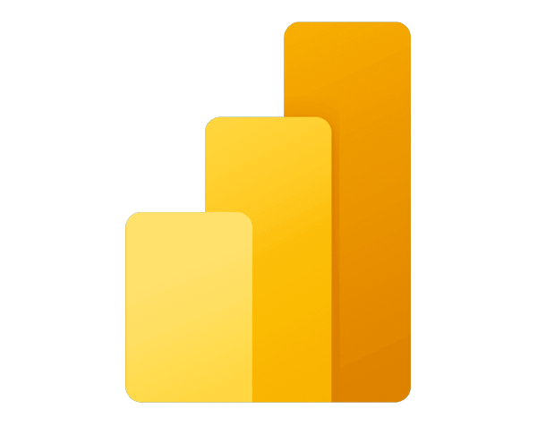

Skills

Power BI
 SQL
SQL
Python
Advanced Excel
I transform data into strategic decisions with innovative solutions.
Contact MeI’m Weimar Miranda, an Industrial Engineer with a Master’s degree in Business Intelligence from the University of Barcelona. With over a decade of experience leading BI initiatives in Bolivia’s public sector—managing $20 million in annual investments—I’ve spent the last three years crafting Power BI solutions that enhanced operational efficiency by 20%. I leverage Python and MySQL to enrich data workflows and optimize reporting, complementing my core expertise in Power BI. Fluent in English at C1 level (Kaplan, New York, 2024).
SQL

This Power BI dashboard analyzes over 2 million Seattle 911 fire emergency calls, uncovering trends in frequency, timing, and geographic distribution. Featuring performance comparisons, Azure Maps for district-level insights, and a Python-integrated SARIMA model for forecasting, it empowers data-driven operational and strategic planning.
“” ★★★★★

Self-Employed
Feb 2025 - PresentExecutive Entity for Natural Gas Vehicle Conversion
Apr 2023 - Apr 2024Executive Entity for Natural Gas Vehicle Conversion
Jan 2022 - Mar 2023Executive Entity for Natural Gas Vehicle Conversion
Aug 2021 - Dec 2021Executive Entity for Natural Gas Vehicle Conversion
Mar 2021 - Jul 2021Executive Entity for Natural Gas Vehicle Conversion
Jan 2018 - Sep 2019Executive Entity for Natural Gas Vehicle Conversion
Jan 2017 - Dec 2017Executive Entity for Natural Gas Vehicle Conversion
Jan 2016 - Dec 2016Executive Entity for Natural Gas Vehicle Conversion
Dec 2015Executive Entity for Natural Gas Vehicle Conversion
Sep 2015 - Nov 2015Executive Entity for Natural Gas Vehicle Conversion
May 2014 - June 2015